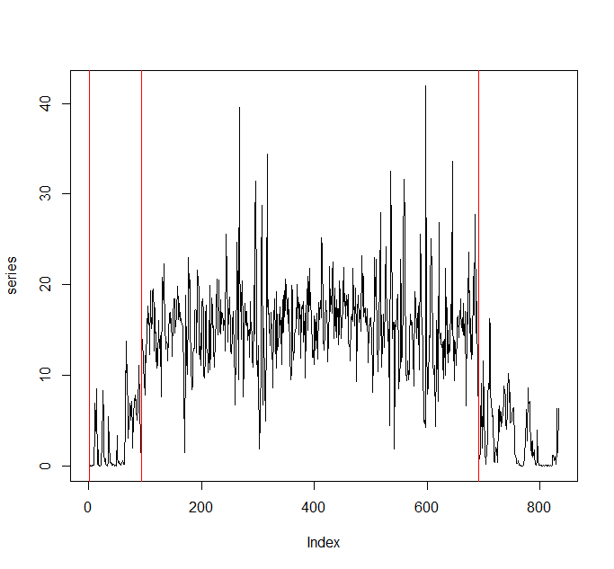
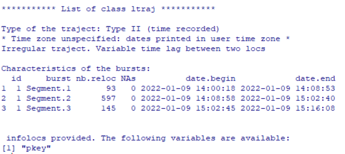
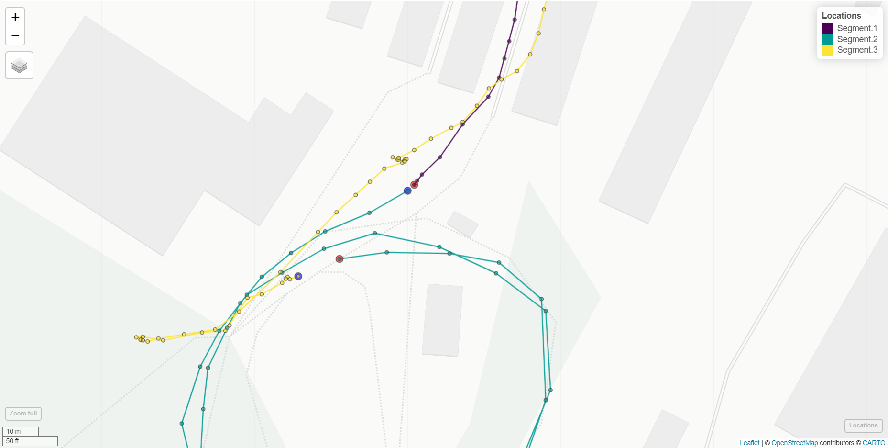
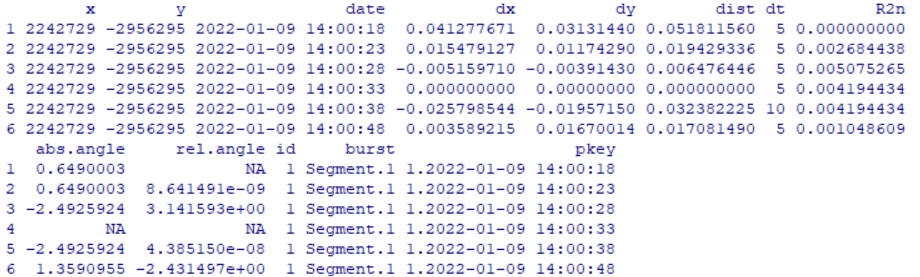
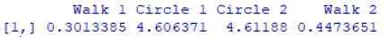
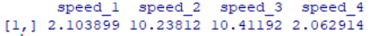
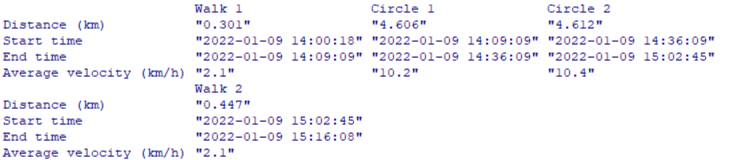
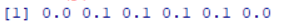
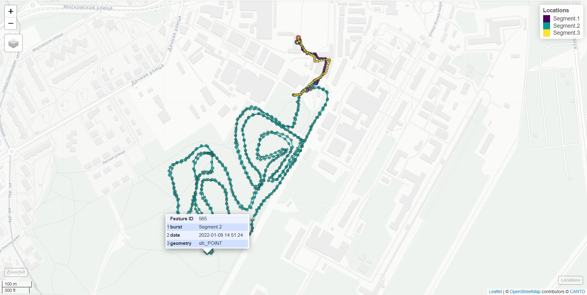

Задание выполнено в R. Использованные пакеты:
sf
sp
adehabitatLT
mapview
htmlwidgets
webshot
Дальше будет следовать код, перемежаемый комментариями и результатами команд
Глава 1. Сегментация
library(sf)
library(mapview)
library(adehabitatLT)
Сперва загрузим данные, а именно слой “track_points”
dsn <- st_read("D:/GIS/lyzhnik/2022-01-09_14-00_Sun.gpx", layer="track_points") |> as("Spatial")
Изменим проекцию на эквидистантную, чтобы было удобнее считать координаты
dsn2<- sp::spTransform(dsn,"+proj=aeqd +lat_0=90 +lon_0=0 +x_0=0 +y_0=0 +datum=WGS84 +units=m +no_defs")
dsn.matr<-st_as_sf(dsn2)
Конвертируем обратно из sp в sf
Готовим почву для дальнейшего сегментирования – создаем объект класса ltraj
trajectory <- as.ltraj(st_coordinates(dsn.matr), date=dsn.matr$time, id=1, proj4string=sp::CRS(st_crs(dsn.matr)$proj4string))
Сегментируем объект с помощью lavielle. Выберем три сегмента, соответствующие пути до трассы, треку по трассе и пути обратно.
segmented <- lavielle(trajectory, Lmin=10, Kmax=6, type="mean")
chooseseg(segmented)
(segments <- findpath(segmented, 3))

Смотрим на получившееся разбиение на сегменты и видим, что в целом получилось достаточно логично, в первом и третьем сегменте перемещения меньше, чем во втором, а второй сегмент как будто состоит из двух повторяющихся частей.
Сам объект segments выглядит следующим образом:
segments

Глава 2. Визуализация
Теперь визуализируем результат разбиения в пакете mapview
loc<-segments
Изменили название, чтобы не искать эту переменную в функции ниже
Дальше следует кусок, скопированный из кода занятия, но с учетом эквидистантной системы координат
'plottraj' <- function(lt,desc=c("burst", "id")) {
desc <- match.arg(desc)
lt <- na.omit(lt)
id <- sapply(lt,attr,desc)
bt_loc <- st_as_sf(ld(lt),coords=c("x","y"),crs=st_crs(dsn.matr)$proj4string)
Проверить, что система координат соответствует таковой исходного файла sf
[c(desc,"date")]
bt_ext <- by(st_geometry(bt_loc),bt_loc[[desc]],function(x) {
st_sf(onset=c("begin","end"),
geometry=rbind(head(x,1), tail(x,1)))
})
bt_ext <- do.call(rbind,bt_ext)
st_crs(bt_ext) <- st_crs(bt_loc)
xy <- lapply(lt,function(obj) {
as.matrix(obj[,c("x","y")]) |> st_linestring()
})
bt_track <- st_sf(dummy=id, geometry=st_sfc(xy,crs=st_crs(dsn.matr)$proj4string))
Проверить, что система координат соответствует таковой исходного файла sf
colnames(bt_track)[grep("dummy",colnames(bt_track))] <- desc
with(list(loc=bt_loc,track=bt_track,ext=bt_ext)
,mapview(ext,zcol="onset",cex=6,layer="Period"
,col.regions=c("blue","red"),legend=F,home=F)+
mapview(track,layer="Track",zcol=desc,home=F,legend=F)+
mapview(loc,zcol=desc,layer="Locations",cex=3,home=T,label="date"))
}
Теперь собственно визуализация в браузере
mapviewOptions(fgb = FALSE)
Этот шаг необходим для нормального экспорта изображения, без него не отображаются точки
(map <- plottraj(loc,"burst"))
Отрисовка
В результате получаем следующую картинку, которую можно при желании приблизить и рассмотреть подробнее:

Кстати, этот скриншот мы добыли не на полке и не в магазине – мы экспортировали его с помощью следующей конструкции:
library(htmlwidgets)
library(webshot)
mapshot (map, file = "D:/GIS/lyzhnik/lyzhnik_map.png")
Приглядевшись внимательнее, видим, что согласно map, разбиение на сегменты прошло не идеально: конец 1 и начало 2 сегмента не строго соответствуют началу “круга”, нужно добавить к сегменту 1 2 первых значения сегмента 2. А у сегмента 2, наоборот, убрать 2 первых значения.
Также надо состыковать конец 2 и начало 3 сегмента (порядка 10 м по карте)

Похоже, эти артефакты появляются из-за того, что ltraj не поддерживает повторяющихся значений, какая жалость.
Хорошо, что наша задача – посчитать, для этого можно использовать просто матрицу без разбиения на сегменты
matrix<-ld(segments)
Получим же эту матрицу
head (matrix)
Для дальнейшей работы неплохо бы представлять, что у нас там есть

И о чудо, у нас там есть уже посчитанные дистанции и временные сдвиги, то есть заморачиваться с этим не нужно.
Глава 3. Вычисление параметров трека.
Для вычисления длин участков траектории разделим датасет на 4 части, сверившись с картой, чтобы у нас концы отрезков соответствовали действительности.
Для этого потыкаем мышкой в точки на интерактивной карте и узнаем их порядковые номера. Такой вот у нас аналитический метод.
walk1<-matrix[1:96,]
circle_1<-matrix[96:396,]
circle_2<-matrix[396:691,]
walk2<-matrix[691:835,]
Считаем общую длину для каждой части (учтем, что где-то могут быть NA)
length_walk1<-sum(walk1[,6], na.rm=TRUE)
length_circle1<-sum(circle_1[,6], na.rm=TRUE)
length_circle2<-sum(circle_2[,6], na.rm=TRUE)
length_walk2<-sum(walk2[,6], na.rm=TRUE)
lengths<-cbind(length_walk1/1000, length_circle1/1000, length_circle2/1000, length_walk2/1000)
делаем поправку на километры
colnames(lengths)<-c("Walk 1", "Circle 1", "Circle 2", "Walk 2")

Милая маленькая таблица, а главное, что длина в километрах оказалась похожа на то, что мы видим из карты map
Приятен также факт, что круги почти сошлись по длине. Значит, мы качественно натыкали!
Теперь посчитаем среднюю скорость движения для каждого участка
Для этого напишем такую функцию:
speed <- function(data) {
dx <- data[, 6]
dt <- data[, 7]
velocities <- 3.6\*dx/dt
return(velocities)
}
Вычисляем скорость для каждой строки в км/ч (исходно м/c)
speeds_1<-speed(matrix[1:96,])
Считаем скорость каждого сегмента движения во время первой части трека
speeds_2<-speed(matrix[96:396,])
speeds_3<-speed(matrix[396:691,])
speeds_4<-speed(matrix[691:835,])
speed_1<-mean(speeds_1, na.rm=TRUE)
Считаем скорость внутри участка как среднюю. Скорость в км/ч
speed_2<-mean(speeds_2, na.rm=TRUE)
speed_3<-mean(speeds_3, na.rm=TRUE)
speed_4<-mean(speeds_4, na.rm=TRUE)
speeds_total<-cbind(speed_1, speed_2, speed_3, speed_4)
speeds_total

Скорости в км/ч вполне приемлемые для пешехода и лыжника
Время начала и конца круга узнаем из уже имеющегося разбиения на отрезки
time_start<-c(walk1[1,]$date, circle_1[1,]$date, circle_2[1,]$date, walk2[1,]$date)
time_end<-c(walk1[96,]$date, circle_1[301,]$date, circle_2[296,]$date, walk2[145,]$date)
final<-rbind(round(lengths, digits=3), as.character(time_start), as.character(time_end), round(speeds_total, digits=1))
Заключаем даты в as.character(), иначе они превратятся в секундный формат
rownames(final)<-c("Distance (km)", "Start time", "End time", "Average velocity (km/h)")
final

Насладимся экспортом с пакетом xlsx
library(xlsx)
write.xlsx(final, "final2.xlsx", row.names=TRUE, col.names=TRUE)
| Distance (km) |
0.301 |
4.606 |
4.612 |
0.447 |
| Start time |
2022-01-09 14:00:18 |
2022-01-09 14:09:09 |
2022-01-09 14:36:09 |
2022-01-09 15:02:45 |
| End time |
2022-01-09 14:09:09 |
2022-01-09 14:36:09 |
2022-01-09 15:02:45 |
2022-01-09 15:16:08 |
| Average velocity (km/h) |
2.1 |
10.2 |
10.4 |
2.1 |
Осталось только найти наиболее удаленную от начала точку
Для этого напишем еще одну функцию, возвращающую расстояние между началом датасета и i-ой точкой:
distance <- function(data) {
X <- data[, 1]
Y <- data[, 2]
delta_X <- X-data[1,]$x
delta_Y <- Y-data[1,]$y
dist <- round(sqrt(delta_X^2 + delta_Y^2), digits=1)
return(dist)
}
p<-distance(matrix)
head(p)
Проверяем, что разность для первой точки 0

max(p)

Итого самая удаленная от начала точка находится от него на расстоянии 771.6 м
Что же это за точка?
Номер пятьсот шестьдесят пятый
И действительно, по карте получается похоже

На этом у меня все, спасибо за внимание